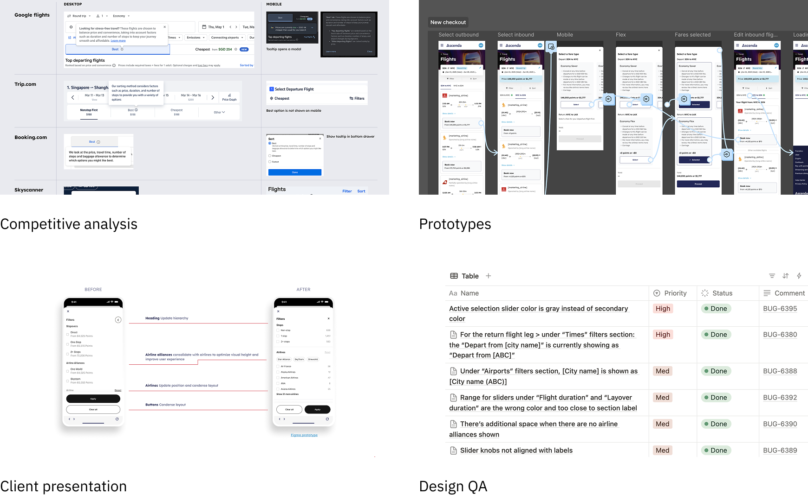

2025
Building a better flight search experience
Ascenda’s travel team brings flight, hotel, and rental car bookings for loyalty programs run by banks and fintechs worldwide. Flights see the highest usage, and since joining, I’ve helped launch several improvements and quick wins for this experience.
Note: some details have been omitted for brevity and confidentiality. Please get in touch for a more detailed case study.
01 Airport grouping
As we expanded into the US market where major cities often have multiple airports, we’ve made it possible for users to search flights by city instead of just a specific airport.
Result: Feature adaptation sits at 11%, and users who search by city converted better than average.
02 More granular filters
We added new filters for layover and flight duration, and improved departure/arrival time filters. The layout was also updated to make it easier for users to find what they need.
The presets for arrival/departure time were replaced with sliders that let users define their desired range.
Beyond adding the requested filters, I also reorganized them to align with user behavior. This resulted to increased engagement and discoverability.
03 Reducing flight search latency
Search latency is one of our biggest challenges. Despite implementing progressive loading, users still wait for all results to appear—worried they might miss out on a better deal. Our initial load times can also get so long that skeleton screens can’t mask the delay, often leaving users wondering if the system has frozen.
An impression of our current progressive loading experience
After exploring and testing several directions, we reworked our search to run two API calls in parallel (one faster call for direct flights only, and another one running in the background for flights with layovers) which allowed us to show relevant flights right away.
New loading experience:
Progress bar ends when first page of results are fetched
We fetch direct results first, sorted by price
Two insights supported our solution:
- From user behavior: we saw that many of our users immediately filter for direct flights
- From competitive research: leading travel platforms use a “Recommended” sort, which often highlights fastest and cheapest options first
Results
Time to show first results dropped by 26%, giving our client confidence while buying us time to tackle deeper technical improvements.
Key takeaways
Working on these flight improvements has been rewarding (pun intended). Here are a few learnings and themes that emerged along the way:
- Design perspective can help solve technical problems. While the latency issue was fundamentally an engineering challenge, involving design early helped the team prototype quickly and maintain user focus when technical constraints pushed toward less intuitive solutions.
- Mature domains benefit from proven patterns. When designing a travel product, there’s value in building on established patterns that users have come to expect rather than reinventing the wheel.
- Go beyond deliverables. Whether it’s doing design QA or presenting design rationale to stakeholders, being involved throughout the process makes a big difference.

The work continues! We’re looking forward to bring our learnings to our other travel offerings.